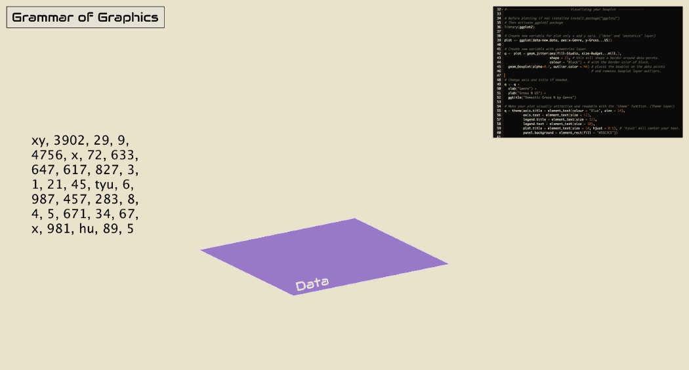
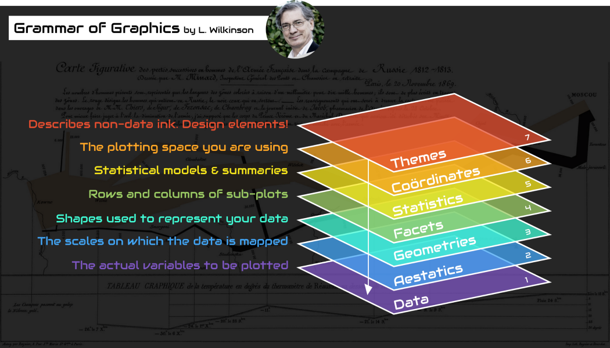

screenshot from An Extremely Detailed Map of the 2016 Presidential Electionby Matthew Bloch, Larry Buchanan, Josh Katz and Kevin Quealy

ggplot2 package (and related others), which... inspired tmapimage source boingboing.net
image source medium.com/tdebeus by Thomas de Beus
image source medium.com/tdebeus by Thomas de Beus
image source
commons.wikimedia.org
by Simon Eugster
image source starbuckssecretmenu.net
image source commons.wikimedia.org
by Michael Johnson
image source commons.wikimedia.org by US federal government
image from O’Sullivan D & DJ Unwin. 2010.
Geographic Information Analysis
, Chapter 1.
image source
commons.wikimedia.org
by Fuzzypeg